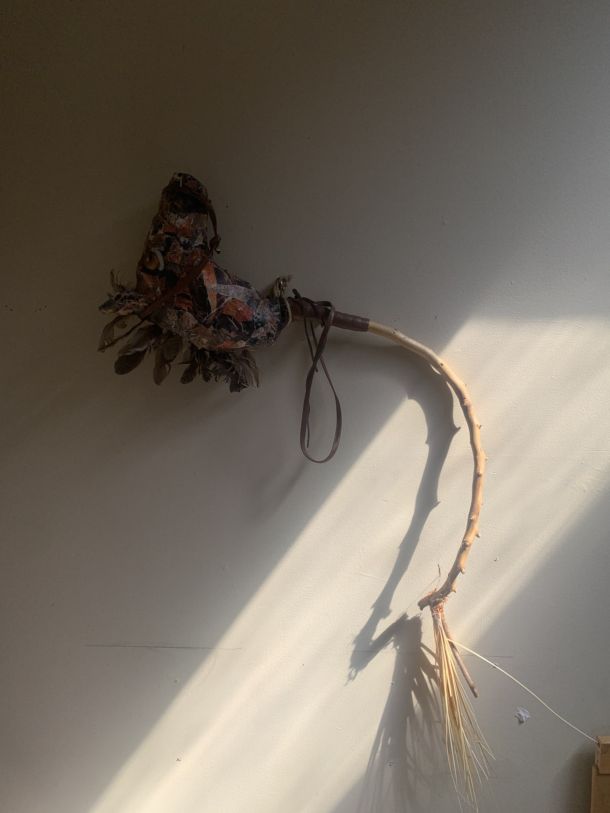
A hanging sculpture
The piece on a plain wall, a branch curving down. A short clip from Weird Kid sits with it on the full page.
Work examples for Permanent Impermanence

The piece on a plain wall, a branch curving down. A short clip from Weird Kid sits with it on the full page.
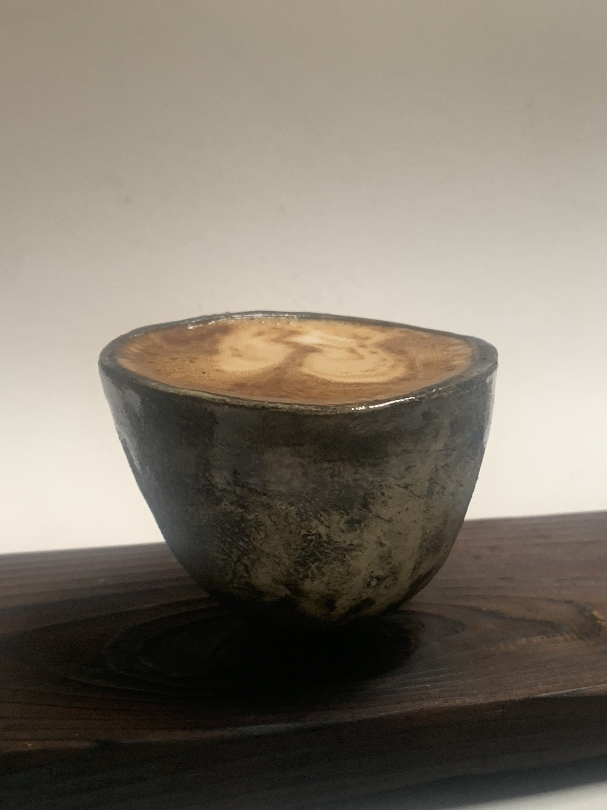
A small cup of coffee on a wooden board, the glaze catching the light.
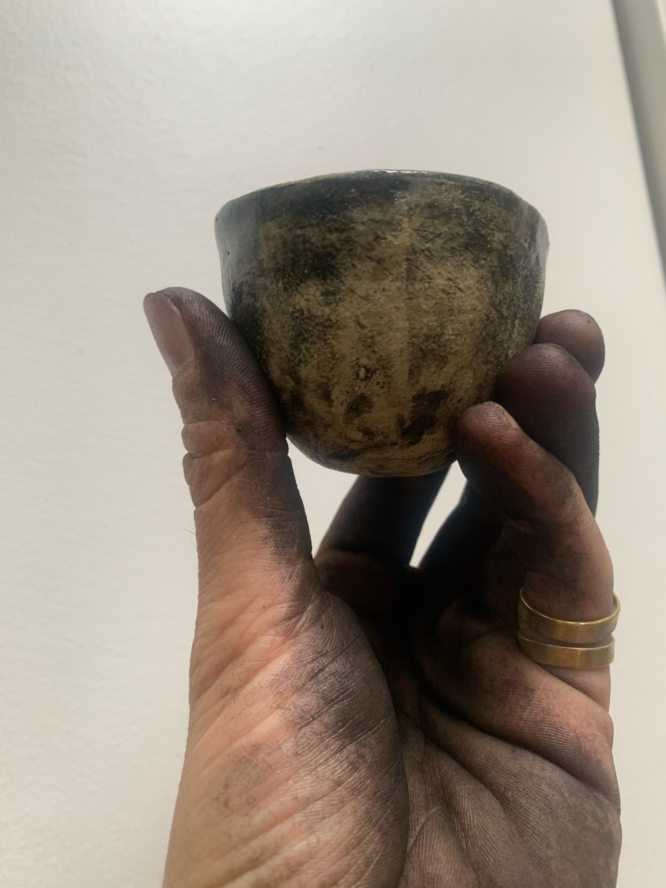
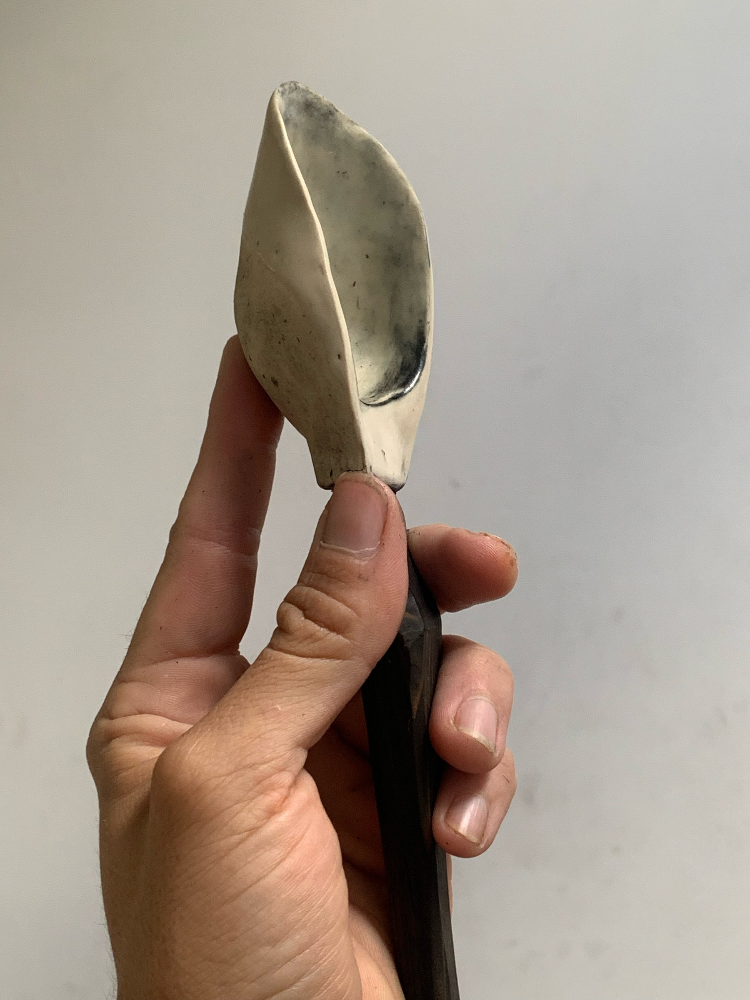
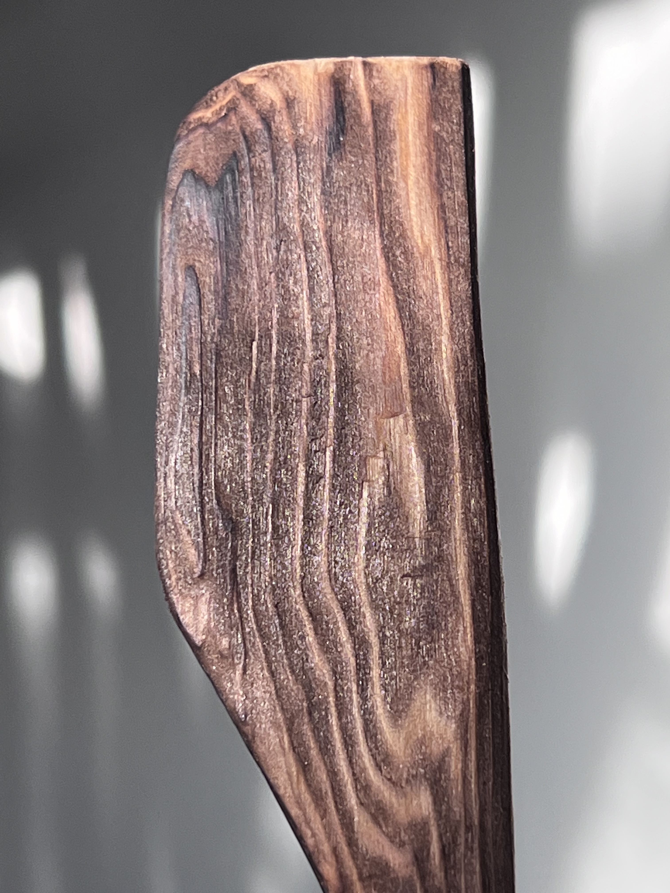
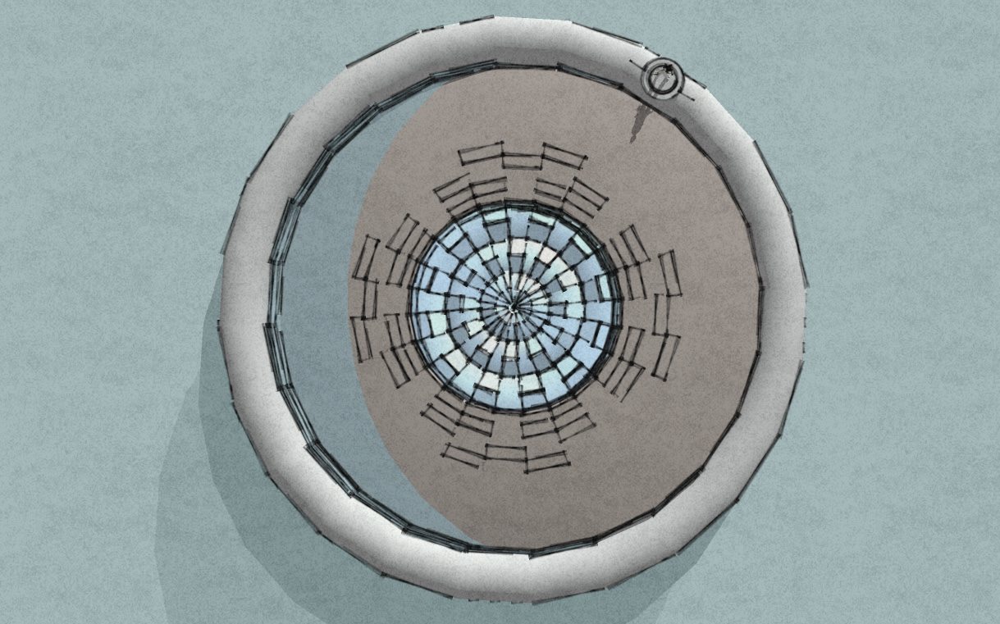
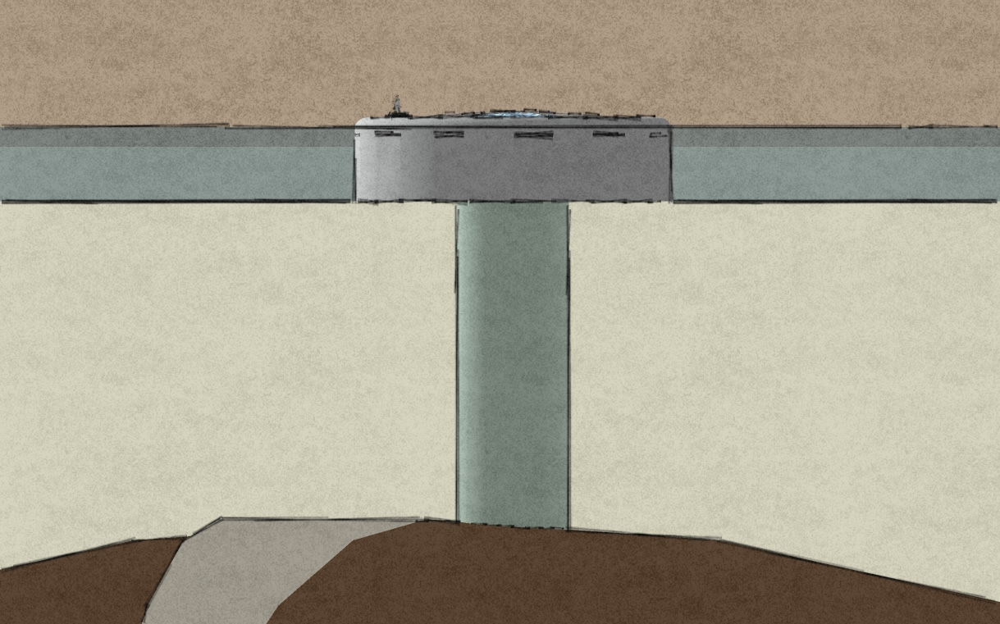
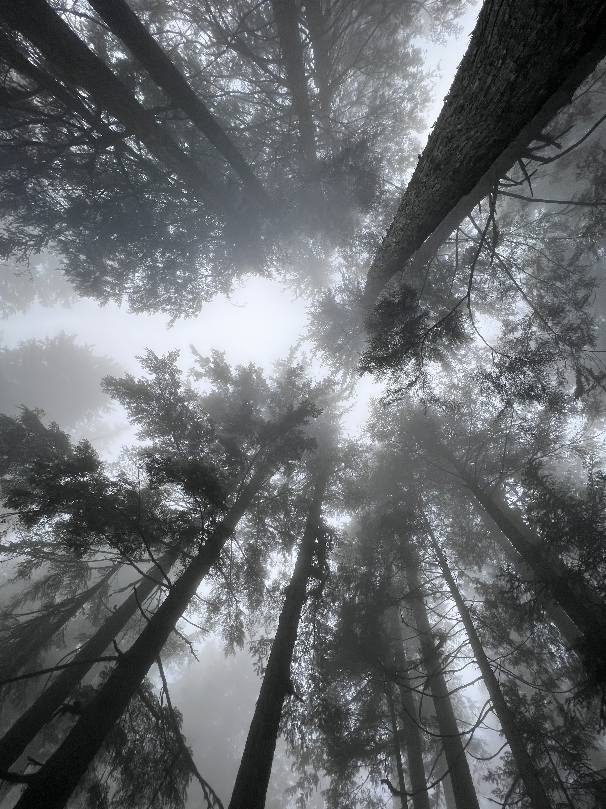
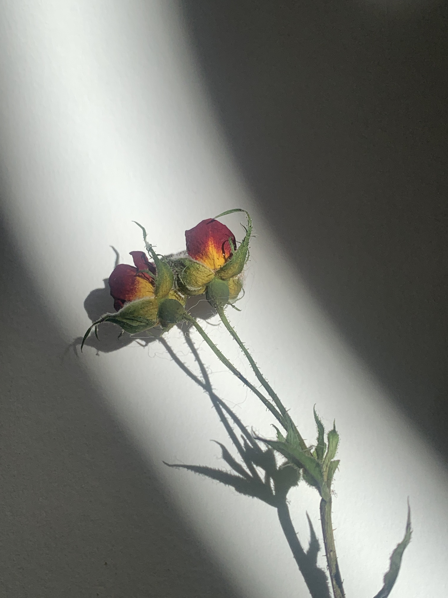
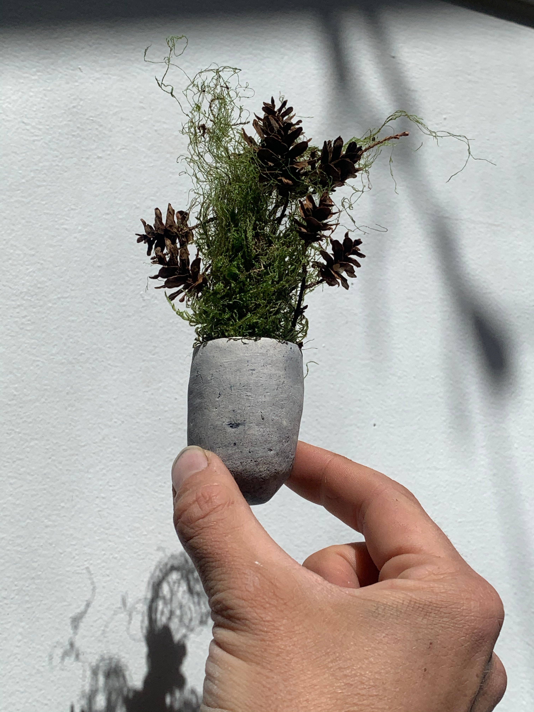
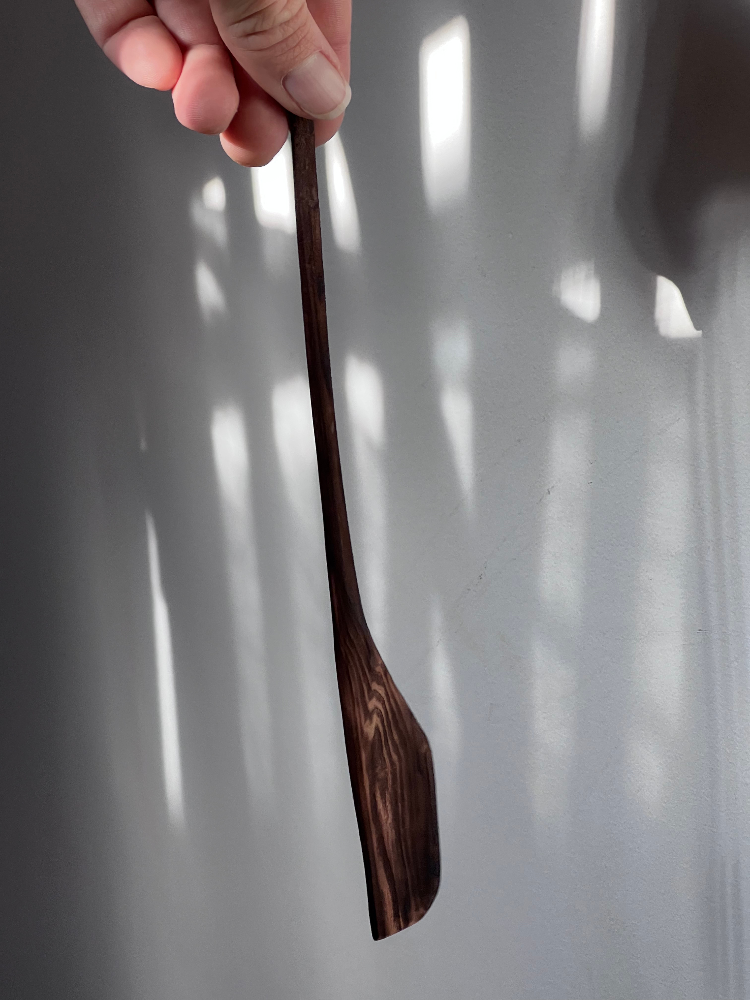
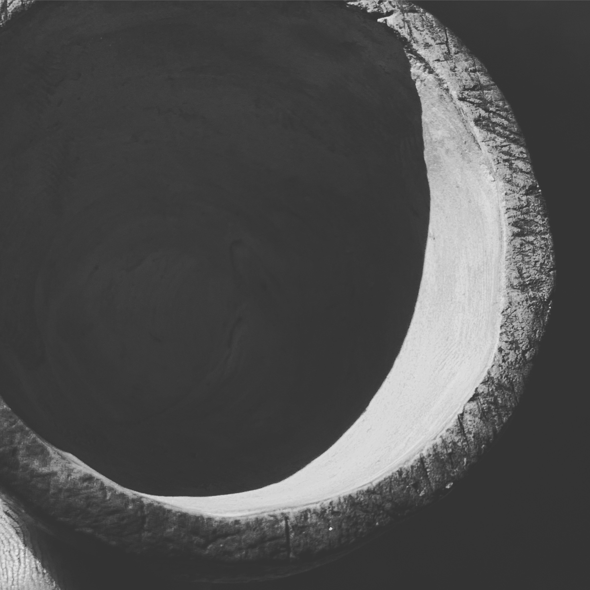
A 1 minute 52 second excerpt from the opening. I was the cinematographer. Director Drew Pollins.
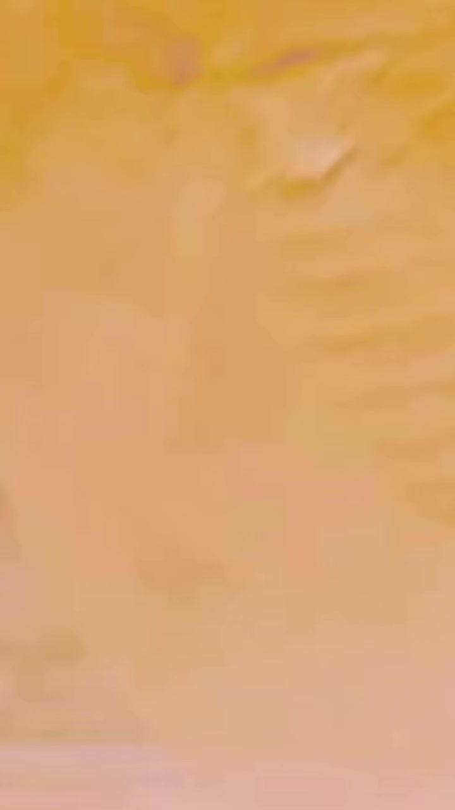
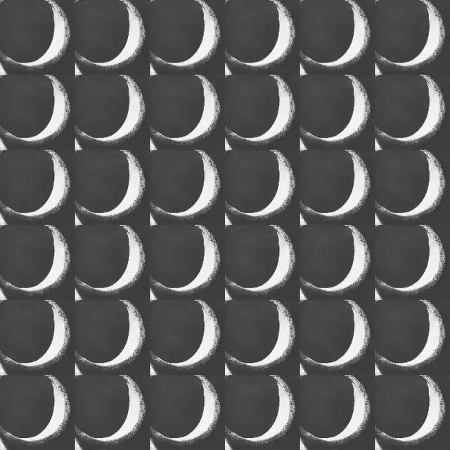
Lost Coffee · 3:36